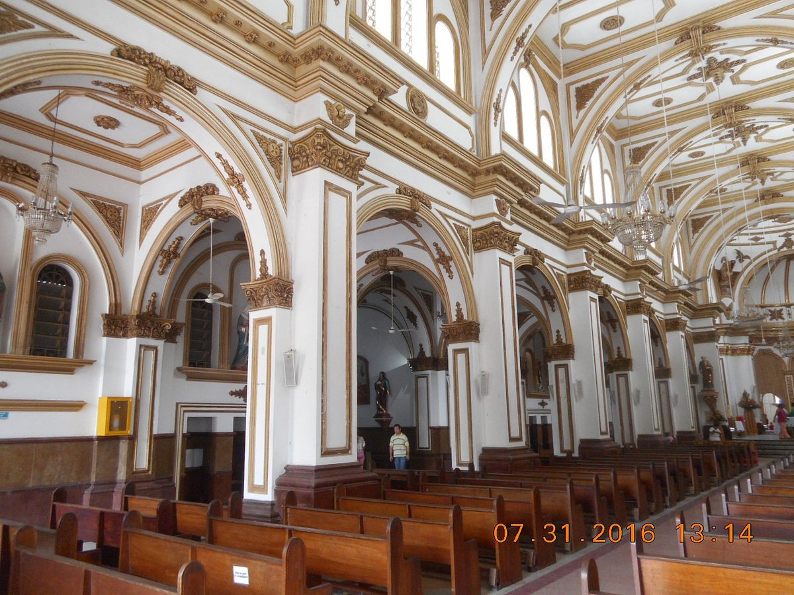
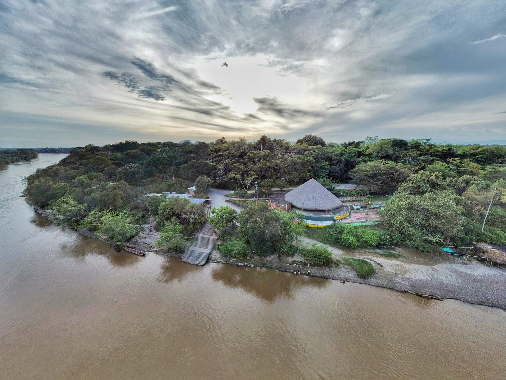
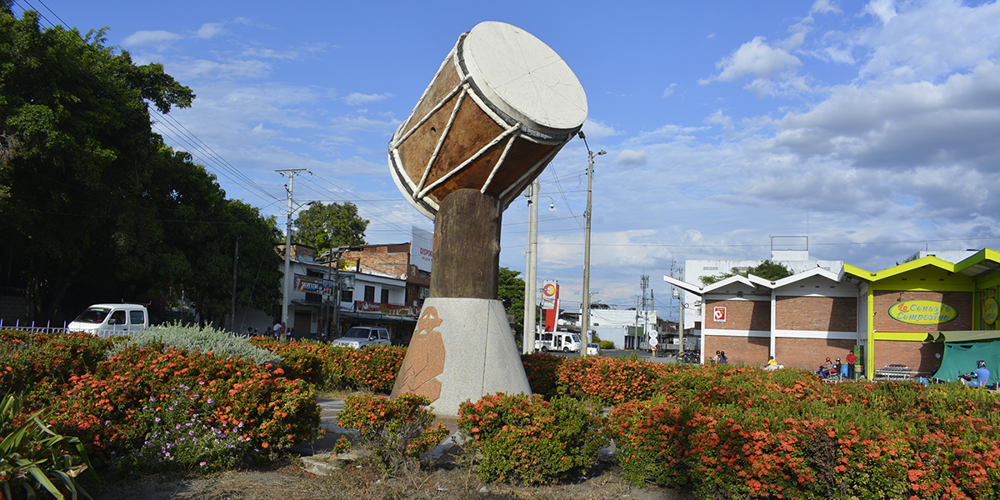
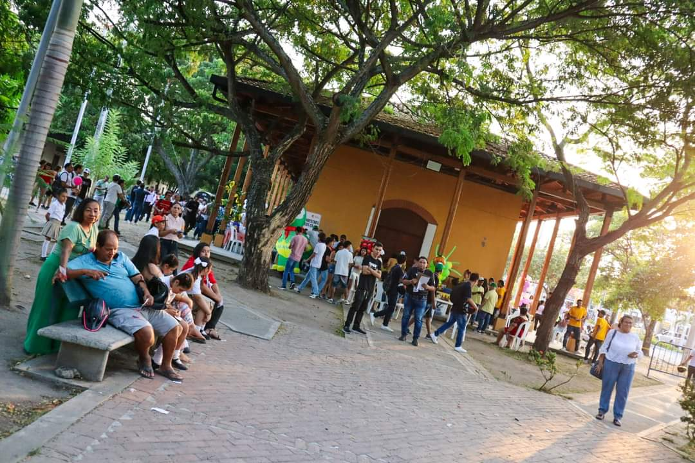
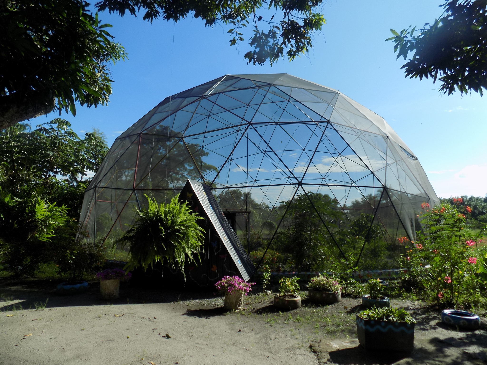

-

Catedral Nuestra Señora Del Rosario
Busca un momento de reflexión y conexión espiritual en la Catedral Nuestra Señora del Rosario. Este santuario, ubicado en el corazón de El Espinal, te ofrece un espacio sagrado para encontrar tranquilidad y renovar tu fe. Déjate envolver por la atmósfera de devoción y admira las hermosas obras de arte que adornan este templo.
Cómo llegar -
Popular 
El Malecon De La Caimanera
Disfruta de un momento de tranquilidad en este hermoso rincón de El Espinal. El Malecón de la Caimanera te ofrece un paisaje espectacular con vistas al río Magdalena, perfecto para relajarte y disfrutar de la brisa. ¡Ven y descubre por qué este lugar es el favorito de los locales y turistas!
Cómo llegar -
Popular 
Monumento De La Tambora
Sumérgete en la rica tradición musical de Tolima y admira este imponente monumento dedicado a la tambora, instrumento icónico de la región. Descubre por qué El Espinal es conocido como la "Cuna del Bunde" y la "Capital de la Tambora". ¡No te pierdas la oportunidad de tomarte una foto con este símbolo de nuestra cultura!
Cómo llegar
-
Popular 
Estación Del Ferrocarril
Sumérgete en la historia del transporte en Colombia y visita la antigua Estación del Ferrocarril de El Espinal. Este emblemático edificio es un testimonio de la época dorada del ferrocarril y un tesoro arquitectónico que te transportará a otros tiempos. ¡Descubre por qué este lugar es un referente histórico y cultural de la región!
Cómo llegar -

Pueblito Espinaluno
Si eres amante de la buena comida, no puedes perderte el Pueblito Espinaluno. Aquí encontrarás una gran variedad de platos típicos de la región, preparados con los ingredientes más frescos y auténticos. ¡Disfruta de una experiencia culinaria inolvidable!
Cómo llegar -

Mariposario
El Mariposario del Espinal es un espacio educativo único donde podrás aprender sobre la biodiversidad de nuestra región y la importancia de proteger el medio ambiente. ¡Ven y disfruta de una experiencia educativa y divertida en contacto con la naturaleza!"
Cómo llegar